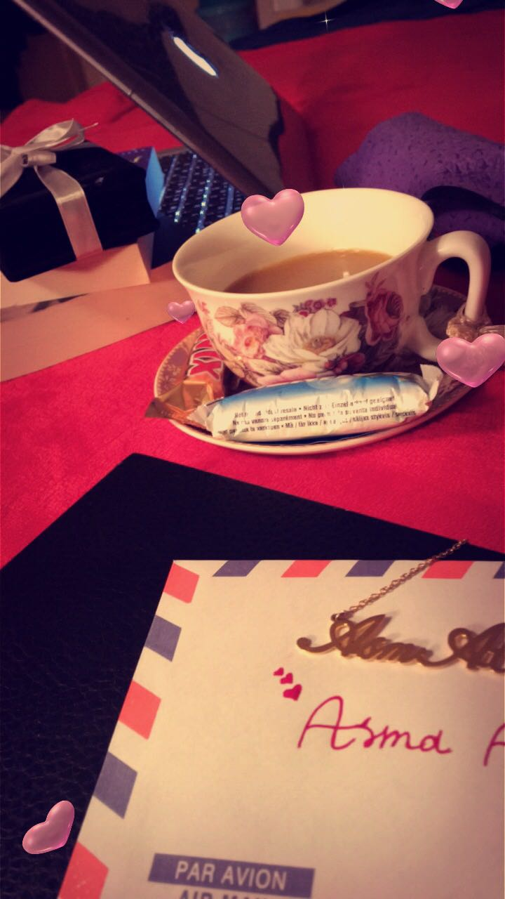

Asma Ali Alameroo
visit Asma's blog
Asma Alameroo's Activities and Publications
About me:
I was born and grew up in Bisha. It is a small city in South of Saudi Arabia
Education:
- June 2008: Bachelor of Arts in English King Khaled University in Bisha
- March-June 2009: Computer test in office affairs
- May 2015: Master of Arts in English at Gannon University, Erie, Pennsylvania, USA
- PHD student in English at IUP 2016 up to now
Conference:
- 60th Annual Conference of the International Linguistic Association, Teachers College, Columbia University, NY, USA. April 24-26, 2015.
- 2017 Interdisciplinary Conferencer: Education, Research, Humanities, and Statistics, on 17 Feb 2017, Washington DC, USA. Present a paper: The Changing Role of American Women In Humanities frome 1945 to 2016.
Work Experience:
- 2008- Present: English Lecturer at University of Bisha
- 2008-2009: Director of Activities for English Department
- 2009 the assistant of Activities of the University
Subjects and Lectures:
- Phonetics
- Writing
- English History
- Reading
- Listening and Speaking3
- Reading Comprehension3
- Poetry
- Speech Workshop.
- Short Story
Research interests:
- Feminism: any literary works that is written by women or for her.
- Literary Criticism: Contemporary Critical Problems.
- Romantic and Victorian Literature
Written with [StackEdit](https://stackedit.io/).